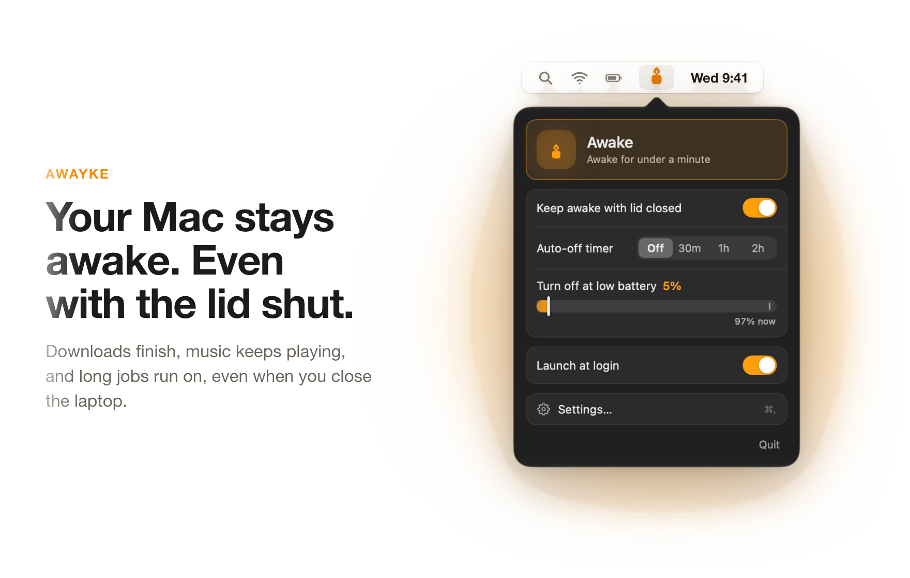
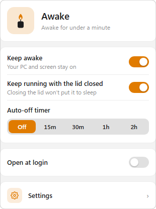
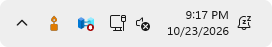
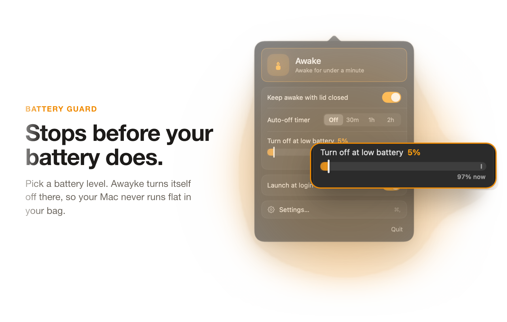
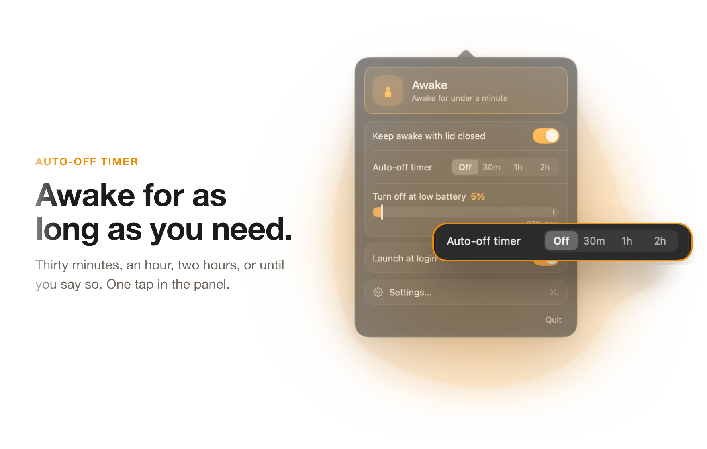
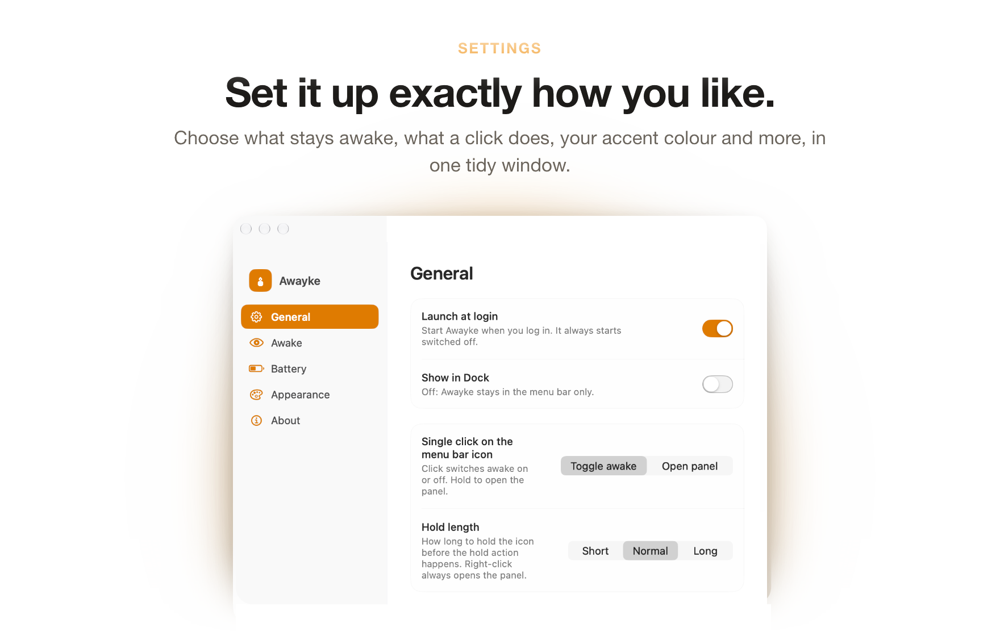
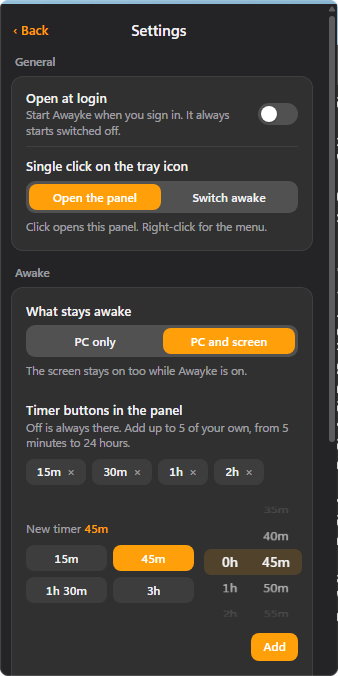
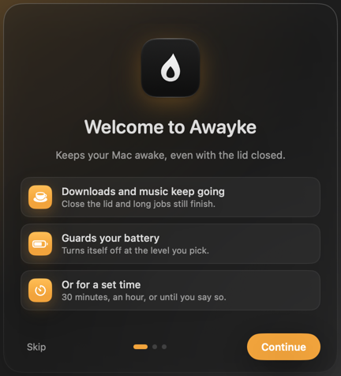
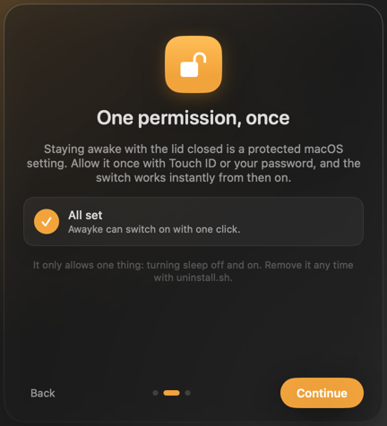
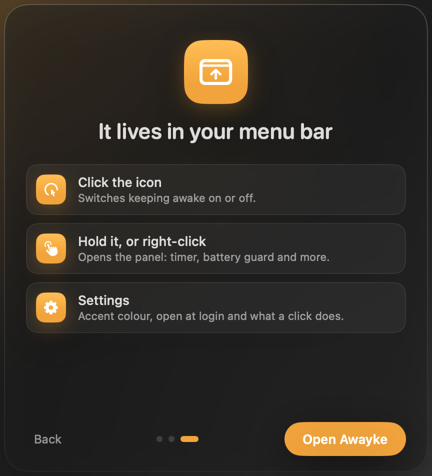

Awayke
Keep your MacBook awake with the lid closed
Awayke is a small menu bar app. Click the candle and your MacBook stays awake, even with the lid shut. Most keep-awake apps cannot stop lid-close sleep, but Awayke can, and it turns that back off for you.
Version 1.4.1. The download buttons give the last published build.
Mac: macOS 26 Tahoe or later, on Apple silicon. Free, open source (MIT licence), no accounts, no telemetry.



What it does
Awake when you need it, and no more
Good for overnight builds and downloads, sharing a hotspot from your bag, or keeping a server reachable with the lid shut.
A timer that ends for you
Pick 30 minutes, 1 hour or 2 hours, or add your own from 5 minutes to 24 hours. Normal sleep comes back when the timer ends, when you quit or restart, and if the app ever crashes.
Stops before the battery does
On battery, Awayke switches itself off at a charge level you choose, from 5 to 50 percent. It can also step aside when your Mac is in Low Power Mode.
Small, native and quiet
No background helper, no kernel extension and no telemetry. Awayke makes no network connections and has no accounts.
A closer look
The panel and the settings
Screenshots of Awayke. Pick an accent colour, and choose how a click works.




Version 1.4.1
A calm first minute
A short welcome with a frosted glass panel: what Awayke does, the one permission it needs for lid-closed mode, and where to find it. Each page plays its animation once.



Install
Download, open, then click the candle
Awayke is not sold through an app store, so macOS may ask you to confirm it the first time you open it.
MacYour computer
macOS 26 Tahoe or later, Apple silicon
- Download Awayke.dmg and open it.
- Drag Awayke into Applications, then open it from there.
- A small candle appears in the menu bar. Click it to switch Awayke on.
- The first time, Awayke asks for permission once, with Touch ID or your password. Then you can close the lid.
If macOS blocks the first open: right-click Awayke in Applications and choose Open, then confirm. Or go to System Settings, Privacy & Security and click Open Anyway.
WindowsYour computer
Windows 10 or 11, 64-bit
- Download Awayke-windows.zip, right-click it and choose Extract All. Keep the folder somewhere permanent, for example Documents.
- Open the folder and run Awayke.exe.
- If Windows shows "Windows protected your PC", click More info, then Run anyway.
- Click the Awayke icon in the system tray. If you cannot see it, click the small arrow next to the tray icons.
About the one-time permission
Why Awayke asks for your password once
- Stopping lid-close sleep needs a protected macOS setting, which normally asks for a password every time.
- Awayke asks once and installs one small rule. It lets your account run exactly two commands without a password: turn lid-close sleep off, and back on.
- Nothing else. The uninstaller removes the rule.
The full security notes are on GitHub.
Questions
Good to know
Is it safe? Will my Mac overheat or drain the battery?
It is fine for light work you leave running, such as downloads, syncing or a hotspot. Heavy work with the lid fully shut reduces airflow, so use judgement. The timer and the low-battery cutoff stop it before the battery runs flat.
I switched it on, closed the lid, and the Mac still slept.
Open the panel and check it says the Mac stays awake. Then, in Terminal, run pmset -g | grep SleepDisabled. It should say 1 while Awayke is on. If it says 0, switch Awayke off and on again to be asked for the permission.
Does it collect any data?
No. Awayke makes no network connections, has no analytics and no accounts. Its settings are stored only on your Mac.
Is it open source? Who made it?
Yes, under the MIT licence. Awayke is based on Sleepless by Adam Boudjemaa, and the redesign and changes are by Solomon. The code is on GitHub.
How do I remove it?
Use the uninstall script that comes with the app, in /Applications/Awayke.app/Contents/Resources/uninstall.sh. It restores normal sleep, removes the app and removes the permission rule.
Unsigned app: how to open it
This app is not signed yet (Apple's developer account is paid, and one is not set up yet), so your computer warns you the first time. Mac: right-click the app, choose Open, then Open again (or System Settings > Privacy & Security > Open Anyway). Windows: in SmartScreen click More info, then Run anyway. You can check your download against the SHA-256 fingerprints listed in the project's CHECKSUMS.md on GitHub.